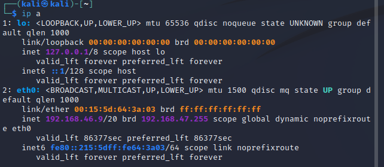

Welcome to the Capture the Flag class!
In this course, we're going to learn some of the basic tactics, techniques, and procedures associated with CTF challenges. Along the way, I hope you will pick up on some key cybersecurity basics.
CTF Tools
Here's a list of tools that we will use in this course.
Virtual Machines
Many of us run our CTF/penetration testing tools inside a virtual machine instead of on our desktop.
This helps because we can:
- keep our own machines free of extraneous tools
- protect our machines from software of unknown origin
- run tools that are not native to our default OS
Before you can run a virtual machine (the guest), you need to set up the host machine as a hypervisor.
Hypervisors
Hypervisors are the software piece that manage virtual machines and allow them access to your hardware. The most common hypervisors for penetration testing or CTF competitions are:
- VMware
- VirtualBox
- Hyper-V
- KVM / QEMU
I find hypervisors to be a matter of personal preference -- each has a set of pros/cons. Some thoughts:
VMware:
- The flagship VMware hypervisors are run on the largest servers in the world and are hugely expensive and immensely capable. The company provides some of this functionality in desktop versions, VMware Player (Intel/AMD) and VMware Fusion (Mac). While these cost money, they provide them free for non-commercial and academic use. These are my personal choice. High quality networking options, display tuning, snapshots, etc. Fusion (Mac) can be found here while Player (Intel/AMD) is here.
VirtualBox
- Available here Completely opposite of VMware... Open source and free. Very popular for hackers because of this. I wish it had better documentation, clipboard support, etc. But you can't beat the price.
Hyper-V
- Developed by Microsoft and available as a built-in service in many versions of Windows, this is an easy one to use for many people. Growing in popularity every year. Learn how to enable Hyper-V here.
KVM/QEMU
- Great choice if you are on a Linux distro. Instructions for enabling on Debian distros here.
VM Snapshots
One of the coolest features of VMs is the ability to take "snapshots". You are, in essence, saving the state of a VM at that instant in time. You can then roll back changes to a previous known state whenever needed.
For CTF competitions, a workflow I see quite a bit is:
- Create a VM and tweak with all the tools you will need.
- Snapshot the VM.
- Start a challenge. This may require you to install new software, add new packages to Python, add temporary entries to /etc/hosts, download binaries for reverse engineering, etc.
- Complete the challenge.
- Rollback the VM to the pre-challenge snapshot. On to the next challenge!
Kali Linux
The most famous distribution of Linux used by hackers worldwide. The main website is here.
Note that Kali based on Debian Linux, so you can find tips on setup, package management, etc. by searching for Kali, Debian, or even Ubuntu.
From the Kali website:
The Kali Linux distribution is based on Debian Testing. Therefore, most of the Kali packages are imported, as-is, from the Debian repositories. In some cases, newer packages may be imported from Debian Unstable or Debian Experimental, either to improve user experience, or to incorporate needed bug fixes.
I prefer create a VM from scratch using an ISO from here.
If you have a working hypervisor and are on PC, you can also grab a pre-built VM image from here
Ghidra
Ghidra is an open source tool from the National Security Agency (yes, that NSA!) that we use for reverse engineering.
Ghidra is a Java app, so you need a working JDK before you can run it.
-
On a Linux machine, you can check your Java version with:
java -version -
Look for the version output, something like:
openjdk version "17.0.8" 2023-07-18Be sure that you have version 17 or higher. -
If you need to install Java, you can use the following command on Kali Linux.
apt install default-jdk -
After you download Ghidra, there isn't a traditional installer. Instead, do the following:
-
Unzip the file. In the unzipped archive, you will find a script to start Ghidra.
- On UNIX-like systems, run the file
./ghidraRun- On Windows, run the file:
ghidraRun.bat
-
SSH into Kali
Since many of the tools you will use on Kali are command line, you don't always need to use the graphical user interface. Sometimes it's easiest to use a terminal and SSH into your Kali instance.
Out of the box, SSH connections to your Kali box are disabled. To enable them, complete the following on your VM:
Install the OpenSSH server.
sudo apt install openssh-server
Enable the SSH service.
sudo systemctl enable ssh.service
Now start the SSH service.
sudo systemctl start ssh.service
Finally, record the IP address of your box. It is most likely located at eth0
ip a

In the above case, the address of your VM is 192.168.46.9
You should be able to login from your desktop now using:
ssh kali@192.168.46.9
VPNs
Let's lay out the following scenario:
You have been given permission to assess a specific asset for vulnerabilities, and this asset is connected to the internet. You can the asset for open ports and find a web server running on port 80. You fire up gobuster to identify potential endpoints on the web site.
WARNING: Network traffic of this sort is associated with threat actors. There is a real possibility that your employer or ISP will flag your activities as malicious and take action.
To remedy this, most CTFs labs and cyber ranges will house their vulnerable assets on internal, protected networks. Your network traffic is tunneled through a Virtual Private Network (VPN) while traversing the open internet, only emerging on that protected network. Not only are the vulnerable assets protected, your malicious looking traffic is hidden from the public internet.
In Kali Linux, you can establish VPN connections at the top right hand corner of the screen.

WARNING: Most VPNs of this sort are classified as SPLIT TUNNEL networks. Only traffic destined for the private network is tunneled. All other traffic is sent normally. Be sure that activities like port scanning, vulnerability scanning, endpoint enumeration, etc. are done only on assets that are part of the private network.
Base64 Encoding
Let's look at how we represent letters and numbers (characters) on a computer. Characters are mapped to numerical values, with that mapping being dependent on the language being used. For instance, computers in the United States often used a scheme known as ASCII (pronounced ask-ee), which contained 95 printable characters encoded into a 7 bit number. Over time, and due to the prevalence of 8-bit native computers, ASCII values were expanded to 8 bits.
It is therefore possible to a byte real quick... There are 256 possible values ranging from 0 to 255. If we wish to send those values over plaintext, however, we run
Cracking passwords
While occasionally we see vendors really screw up and store passwords in plaintext, nearly all passwords are hashed in some form.
Cracking passwords
Download a test file here: Example shadow file